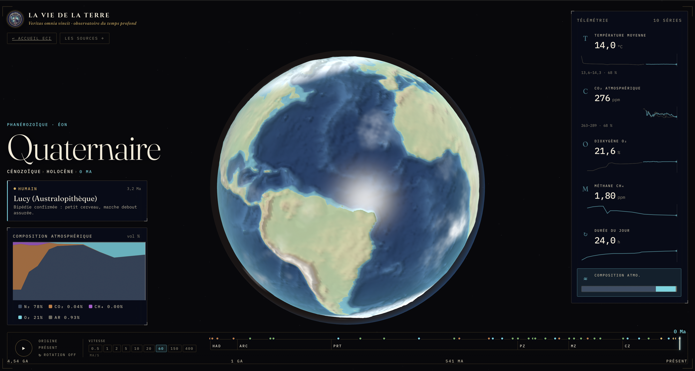

◍
Globe paléogéographique
De 0 à 540 Ma, le relief vient de PaleoDEM ; de 540 à 1000 Ma, des masques tectoniques schématiques reconstruisent les terres ; avant 1 Ga, le rendu assume l'incertitude.
cartes interpoléesDossier VI · Observatoire du temps profond
Une application interactive pour traverser 4,54 milliards d'années : continents qui dérivent, climat qui bascule, atmosphère qui s'oxygène, durée du jour qui s'allonge — et une règle d'or : chaque courbe doit pouvoir remonter à sa source.
Ce que l'application rend visible
Le curseur temporel pilote tout : la position des continents, les graphes de température, CO₂, O₂, CH₄, composition atmosphérique et durée du jour. L'application ne raconte pas « une jolie histoire » : elle montre où les mesures existent, où les modèles prennent le relais, et où l'incertitude impose une scène stylisée.
La page que vous lisez est le dossier ECI de l'observatoire : elle explique le parcours, les sources et la chaîne de production des données.


Données ouvertes, pipeline reproductible, intégration ECI : l'objectif est que chaque image spectaculaire soit accompagnée de sa méthode.
Mode d'emploi
L'application est construite comme une console scientifique : les mêmes données alimentent le globe, les cartes, les graphes et les téléchargements.
De 0 à 540 Ma, le relief vient de PaleoDEM ; de 540 à 1000 Ma, des masques tectoniques schématiques reconstruisent les terres ; avant 1 Ga, le rendu assume l'incertitude.
cartes interpoléesFormation de la Lune, premiers océans, Grande Oxydation, Ediacara, extinctions, Homo sapiens : 45 repères replacent chaque bascule dans le temps profond.
45 jalonsTempérature, CO₂, O₂, CH₄, composition et durée du jour : les courbes signalent si l'on observe, modélise ou estime — au lieu de mélanger tous les statuts.
10 sériesAtlas des bascules
Filtrez les jalons par catégorie : planète, vivant, climat ou humanité. Les âges sont exprimés en Ma (millions d'années avant aujourd'hui) ; 0,3 Ma = 300 000 ans.
D'où viennent les chiffres ?
La force de l'observatoire est de ne pas cacher la frontière entre mesure et reconstruction. Voici les variables affichées et la manière dont elles sont produites.
Position des continents, topographie et bathymétrie plaquées sur le globe.
0–540 Ma : PaleoDEM de Scotese & Wright, converti en heightmaps PNG 16-bit.
540–1000 Ma : reconstructions Merdith et al. via pyGPlates, rasterisées en masques terre/mer.
Avant 1000 Ma : rendu stylisé, car la tectonique devient trop incertaine.
GMST, de l'océan de magma au climat actuel.
0–485 Ma : PhanDA (Judd et al. 2024), assimilation de >150 000 mesures de proxies et >850 simulations climatiques.
485–4540 Ma : points d'ancrage issus de la littérature, signalés comme estimés puis interpolés.
Trois reconstructions indépendantes affichées ensemble.
PhanDA co-estime CO₂ et température ; Foster et al. compilent >1200 proxies ; GEOCARBSULF calcule le cycle carbone-soufre en run déterministe.
De l'anoxie archéenne au 21 % actuel.
0–570 Ma : sortie O₂ de GEOCARBSULF, avec un pic carbonifère-permien. 570–4000 Ma : ancrages conceptuels issus de Lyons et al. pour la Grande Oxydation et le Précambrien.
Gaz-clé de la Terre primitive, avant l'oxygénation.
Aucune mesure directe n'est possible : les valeurs sont des estimations de modèles. Le pic archéen s'effondre après la Grande Oxydation, lorsque l'O₂ détruit le CH₄ atmosphérique.
Le ralentissement de la rotation terrestre par les marées Terre-Lune.
Rythmites de marée et sclérochronologie donnent des points fermes ; Farhat et al. reconstruisent la courbe Terre-Lune ; Mitchell & Kirscher documentent un palier proche de 19 h au Protérozoïque moyen.
La donnée avant le spectacle
Les fichiers bruts publiés sont transformés hors runtime par scripts Python, puis l'interface lit des fichiers normalisés. Rien n'est inventé au moment de l'affichage.
L'image spectaculaire ouvre le récit ; les données ouvertes le rendent vérifiable.
Données ouvertes
Les fichiers de sortie sont exposés par l'application : le JSON des séries, le manifeste des cartes et les exports CSV depuis la page sources.
Transparence
Le dossier ne remplace pas la page sources de l'application : il l'encadre. La page originale détaille chaque variable, ses jeux de données, ses citations et les fichiers téléchargeables.
Proxies géochimiques, fossiles, sédiments, données publiées et compilées par des équipes scientifiques.
preuves directesCalculs physiques ou géochimiques contraints par des observations : GEOCARBSULF, pyGPlates, assimilation climatique.
modèles contraintsAncrages de consensus, forte incertitude, surtout avant 1 Ga : l'interface le signale au lieu de le masquer.
prudence expliciteUn collectif qui oppose, fait par fait, la puissance du réel aux récits de l'intox. Ici, même la beauté d'un globe animé doit répondre à une question : comment le sait-on ?